Contents
Inhomogén hővezetés egyenlete véges rúdban különböző peremfeltételek mellett
file: pde_heat_transfer_inhomogene.m author: Polcz Péter <ppolcz@gmail.com>
Created on 2016.12.15. Thursday, 16:51:19
% fname: full path of the actual file pcz_cmd_fname('fname'); stack = dbstack; if ~ismember('publish', {stack.name}), persist = pcz_persist(fname); end %persist.backup();
Hővezetés egyenlete: 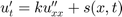, ahol 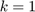.
Kezdeti feltételek:
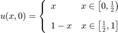
Peremfeltételek:
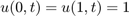
A pdepe solver
A pdepe solver ilyen típusú kétváltozós PDE-ket tud megoldani:
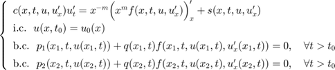
Az 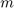 értéke csak 0,1,2, lehet.
A pdepe első paramétere az értéke (esetünkben 0), a második paramétere a , 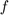,  függvényeket írja le, a harmadik paramétere az 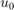, a negyedik pedig a 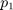, 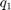, 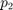, 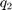 függvényeket írjak le. A következő két paraméter az 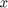 és a 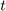 diszkrét pontjait definiálják.
függvényeket írja le, a harmadik paramétere az 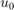, a negyedik pedig a 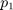, 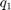, 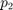, 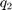 függvényeket írjak le. A következő két paraméter az 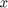 és a 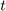 diszkrét pontjait definiálják.
A hővezetés egyenlet együtthatói együtthatói:
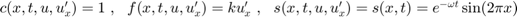, ahol egy konstans, ettől függően lesz gyorsabb, vagy lassabb a lecsengés.
k = 1; return % The equation of the problem. pde = @(x,t,u,DuDx) deal( 1 , k*DuDx , 0);
Az előző sor kissé mélyvíznek tűnhet a kezdő Matlab felhasználóknak. A pde egy olyan anoním függvény kell hogy legyen, aminek négy argumentuma van: 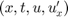, és három visszatérési értéke: , ,  . A deal függvény oldja meg azt, hogy egy inline deklarált anoním függvénynek több (esetünkben három) visszatérési értéke legyen. Ezzel ekvivalens módon létre is hozhattam volna egy külön file-ban egy függvényt:
. A deal függvény oldja meg azt, hogy egy inline deklarált anoním függvénynek több (esetünkben három) visszatérési értéke legyen. Ezzel ekvivalens módon létre is hozhattam volna egy külön file-ban egy függvényt:
function [c,f,s] = pde_fun(x,t,u,DuDx) c = 1; f = k*DuDx; s = 0; end
A scriptben pedig: pde = @pde_fun. Ezt szerettem volna elkerülni.
% Initial condition:
ic = @(x) triangularPulse(0,1,x);
A peremfeltételeket a következő alakban kell megadni:
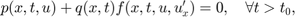
ahol 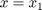 (baloldali perem), vagy 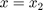 (jobboldali perem).
Az itt szereplő 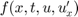-t már a PDE egyenletének megadása során meghatároztuk: 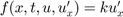.
Cél: 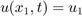 és 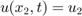, ahol 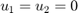, ezért
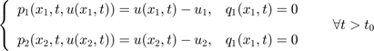
u1 = 0;
u2 = 0;
% Boundary conditions
bc = @(x1,u_x1,x2,u_x2,t) deal( u_x1 - u1, 0, u_x2 - u2, 0 );
A bc egy olyan anoním függvény kell legyen, ami öt argumentumot vár: 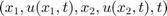 és négy visszatérési értéke van. Az első kettő a baloldali peremfeltételre vonatkozó 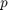 és függvények, a második kettő pedig a jobboldalra vonatkozó peremfeltétel és függvényei.
Lehet próbálkozni különböző peremfeltételekkel is:
% Izolált rendszer (a végeken nincs hőveszteség) % bc = @(x1,u_x1,x2,u_x2,t) deal( 0, 1, 0, 1 ); % Mindkét végét melegítjük % bc = @(x1,u_x1,x2,u_x2,t) deal( u_x1 - 0.1, 0, u_x2 - 0.9, 0 ); % Mindkét végét melegítjük (de a melegítés exponenciálisan lecseng) % bc = @(x1,u_x1,x2,u_x2,t) deal( u_x1 - exp(-10*t), 0, u_x2 - exp(-10*t), 0 );
Numerikus megoldás pdepe segítségével
m = 0; x = linspace(0,1,101); t = linspace(0,0.1,101); sol = pdepe(m,pde,ic,bc,x,t);
Vizualizáció
% Ha netán több megoldása lenne (ezzel még nem volt baj), akkor az % első legyen az amit kiplottolunk. u = sol(:,:,1); fig = figure('Position', [165 540 1066 380], 'Color', 'white'); subplot(121), surf(x,t,u), light, shading interp xlabel('Distance x') ylabel('Time t') clear frames subplot(122), for i = 1:numel(t) plot(x, u(i,:)); title(sprintf('time = %0.3f, $\\int u(x,t)\\rm{d}x = %0.5f$', t(i), trapz(x, u(i,:))), 'Interpreter', 'latex'), axis([0, 1, 0, 1]) pause(0.1), if i == 10 persist.pub_vid_poster('hovez_veges_haromszog') end frames(i) = getframe(fig); end persist.pub_vid_write(frames)